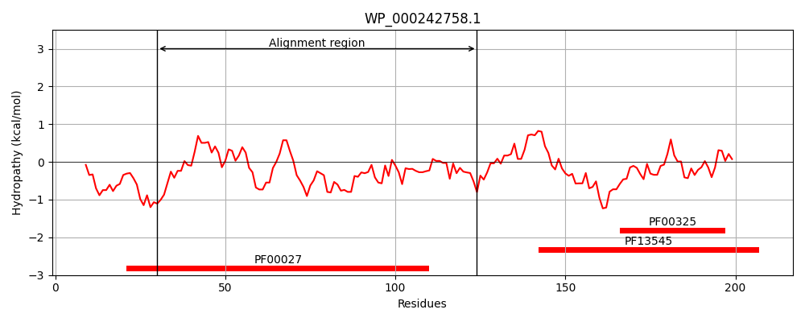
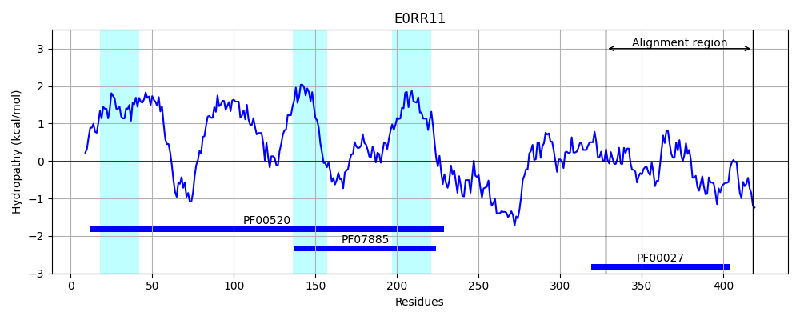
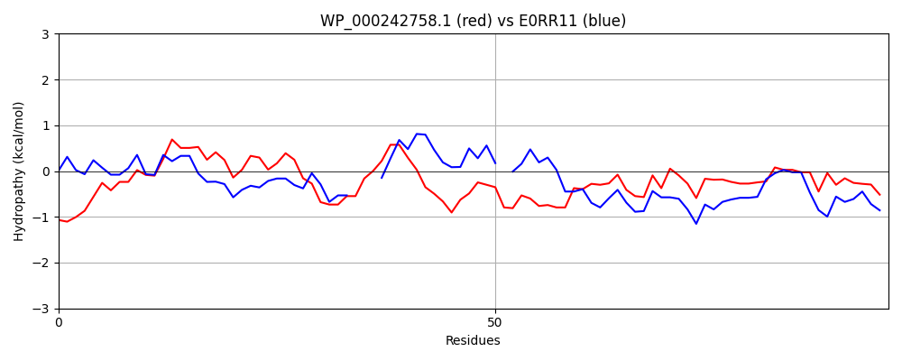

Hit Accession: E0RR11
Hit TCID: 1.A.1.5.35
Hit Description: gnl|BL_ORD_ID|3559 gnl|TC-DB|E0RR11|1.A.1.5.35 Cyclic nucleotide-binding domain-containing protein OS=Spirochaeta thermophila (strain ATCC 49972 / DSM 6192 / RI 19.B1) OX=665571 GN=STHERM_c06300 PE=1 SV=1
Mach Len: 95
e:0.000000
Query TMS Count : 0
Hit TMS Count: 3
TMS-Overlap Score: 0.000000
Predicted Substrates:CHEBI:8345;potassium(1+)
BLAST Alignment:
| Protein Hydropathy Plots: | |
|---|---|
|  |  |
Pairwise Alignment-Hydropathy Plot: | |
|  | |